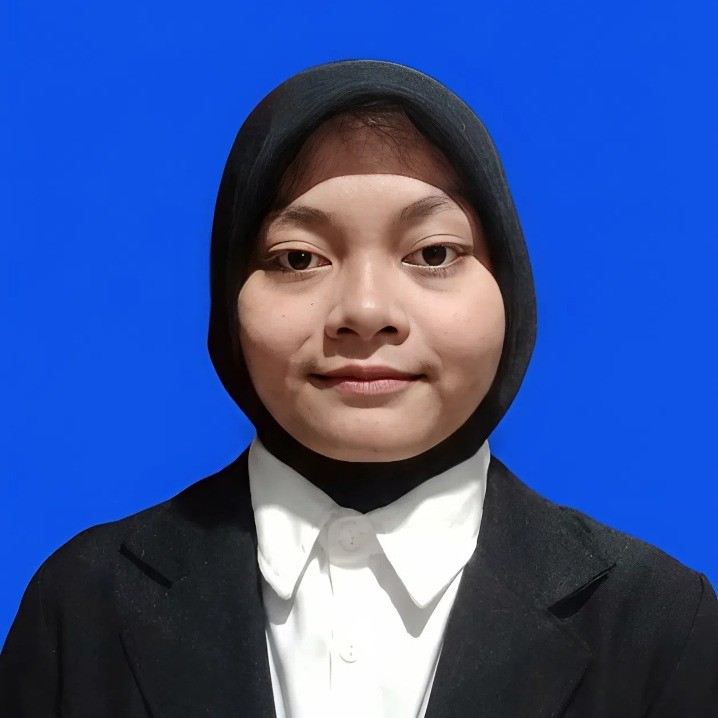

Nama: Rina Suhita
NIM: 250411100067
Kelas: IF-2B
Project Akhir Mata Kuliah DPW
Website Informasi Film
Penjelasan Interface:
1. Home Page
Home Page merupakan halaman utama yang pertama kali ditampilkan ketika pengguna membuka website.
Halaman ini berfungsi sebagai pusat navigasi yang mengarahkan pengguna ke berbagai fitur yang tersedia di dalam website, seperti daftar film, pencarian film, genre film, dan informasi lainnya.
Pada halaman ini juga ditampilkan beberapa rekomendasi film serta menu navigasi utama agar pengguna dapat dengan mudah menjelajahi website.
2. Error Page
Error Page merupakan halaman yang muncul ketika pengguna mengakses halaman yang tidak tersedia atau terjadi kesalahan pada sistem. Halaman ini bertujuan untuk memberi informasi kepada pengguna bahwa halaman yang diminta tidak dapat ditemukan serta menyediakan opsi untuk kembali ke halaman utama.
3. Profile Anggota Kelompok
Halaman Profile Anggota Kelompok berisi informasi mengenai anggota kelompok yang terlibat dalam pembuatan website ini. Setiap halaman menampilkan dua anggota kelompok yang berisi data seperti nama, peran dalam proyek, serta deskripsi singkat mengenai kontribusi masing-masing anggota.
4. Search Result
Halaman Search Result menampilkan hasil pencarian film berdasarkan kata kunci yang dimasukkan oleh pengguna. Pada halaman ini akan ditampilkan daftar film yang relevan dengan pencarian, sehingga pengguna dapat dengan mudah menemukan film yang diinginkan.
5. Filter Result
Halaman Filter Result menampilkan daftar film berdasarkan hasil penyaringan yang dipilih oleh pengguna.
Penyaringan dapat dilakukan berdasarkan genre, kategori, atau kriteria tertentu sehingga pengguna dapat mempersempit pilihan film sesuai preferensi.
6. List Genre & All Film
Halaman ini menampilkan daftar seluruh genre film yang tersedia pada website serta daftar semua film yang dapat diakses oleh pengguna. Tujuan dari halaman ini adalah untuk memudahkan pengguna dalam melihat kategori film serta menjelajahi seluruh film yang tersedia.
7. Top Film Terbaik
Halaman ini menampilkan sepuluh film terbaik yang direkomendasikan dalam website.
Film-film ini dipilih berdasarkan popularitas, rating, atau rekomendasi tertentu sehingga dapat menjadi referensi bagi pengguna dalam memilih film untuk ditonton.
8. FAQ & Pusat Bantuan
Halaman FAQ & Pusat Bantuan berisi kumpulan pertanyaan yang sering diajukan oleh pengguna beserta jawabannya.
Halaman ini bertujuan untuk membantu pengguna memahami cara menggunakan website serta menyelesaikan masalah yang mungkin terjadi saat mengakses fitur yang tersedia.